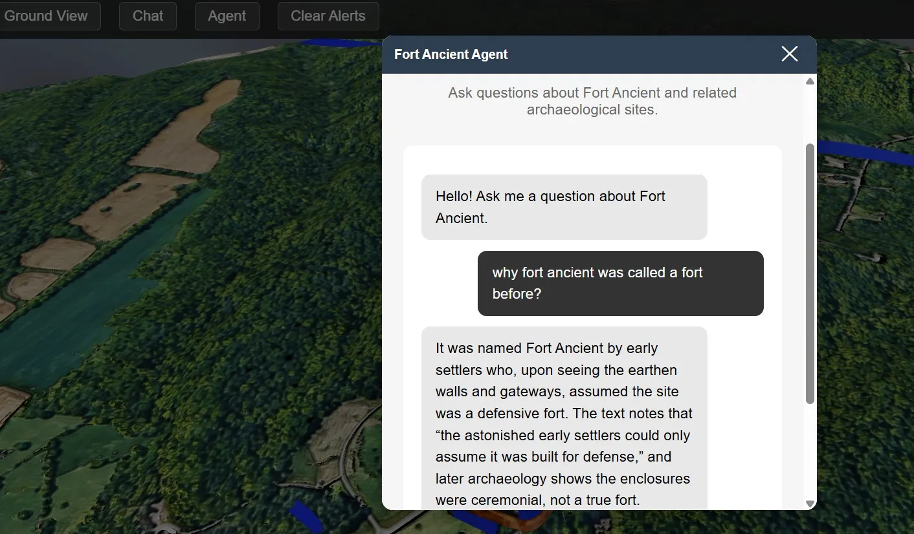
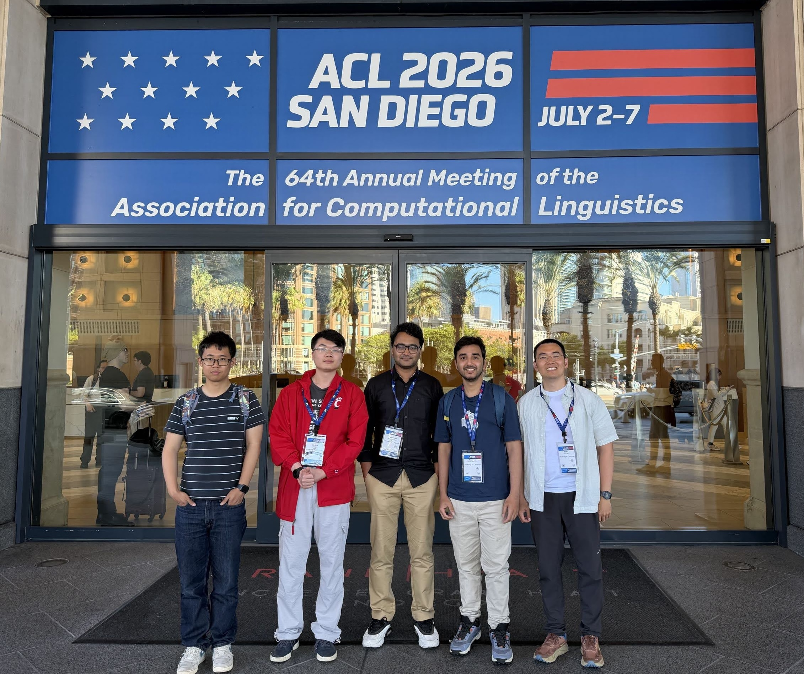
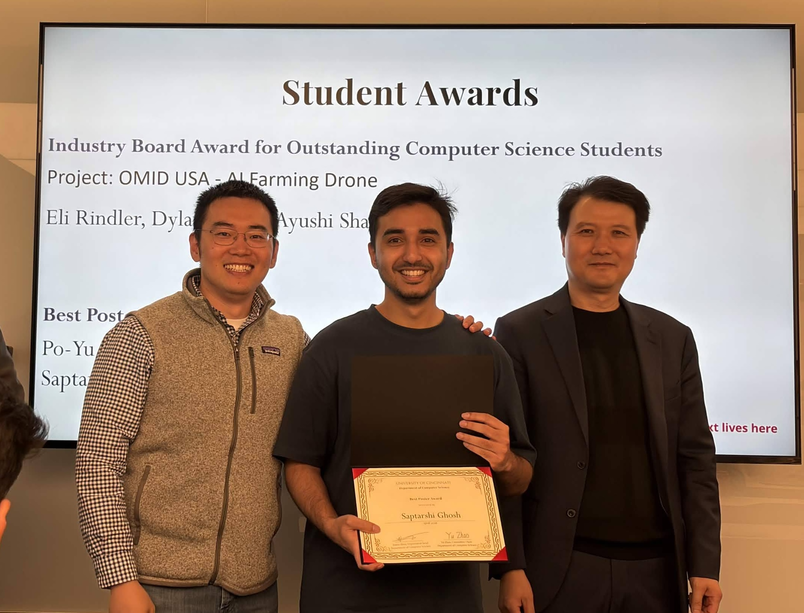

I am a PhD student at the University of Cincinnati, specializing in Natural Language Processing. I work in the CincyNLP Lab, advised by Dr. Tianyu Jiang. My research spans LLM evaluation, multilinguality, multimodality, interpretability and explainability, safety, and bias and fairness, with a particular focus on linguistics & figurative language.
Recent News
-
September 2026
Fort Ancient can now talk back! 🏛️ It was really fun designing and deploying an AI chatbot for our Re-storying Fort Ancient Digital Twin project.

-
June 2026
Our paper has been accepted to TMLR.
-
May 2026
CincyNLP team in San Diego for ACL 2026.

-
May 2026
I will be serving as a reviewer for NeurIPS 2026.
-
May 2026
Happy to receive the Best Poster Award at the CS Symposium. 🏆

-
April 2026
Three of my papers were accepted to the ACL 2026 Main Conference.
-
March 2026
Honored to receive the University Research Council (URC 2026) Award.
-
February 2026
Our paper was accepted to the EACL 2026 Main Conference.
Recent Preprints
-
AI Reviews Are Biased Towards The Appendix
arXivarXiv:2611.17811, 2026
-
Cross-Lingual Steering for Figurative Language Generation
arXivarXiv:2605.30443, 2026
Publications
-
A Geometric Lens on LLM Abilities through Joint Embedding Item Response Theory
TMLR 2026Transactions on Machine Learning Research
-
MetFuse: Figurative Fusion between Metonymy and Metaphor
ACL 2026Proceedings of the 64th Annual Meeting of the Association for Computational Linguistics
-
Exploring Concreteness Through a Figurative Lens
ACL 2026Proceedings of the 64th Annual Meeting of the Association for Computational Linguistics
-
Evaluating the Impact of Verbal Multiword Expressions on Machine Translation
ACL 2026Proceedings of the 64th Annual Meeting of the Association for Computational Linguistics
-
A Computational Approach to Visual Metonymy
EACL 2026Proceedings of the 19th Conference of the European Chapter of the Association for Computational Linguistics
-
ConMeC: A Dataset for Metonymy Resolution with Common Nouns
NAACL 2025Proceedings of the 2025 Annual Conference of the Nations of the Americas Chapter of the Association for Computational Linguistics
-
Common Noun Metonymy Resolution Using Large Language Models
MS ThesisUniversity of Cincinnati, 2025
Experience
-
Research Assistant · University of Cincinnati
Summer 2026 – PresentRe-storying Fort Ancient
eXtended Reality (XR) Lab, College of DAAP
Summer 2025 – Spring 2026Cost-efficient deployment of LLMs
-
Fall 2024 – Spring 2025
Teaching Assistant · University of Cincinnati
CS 5034/6034: Natural Language Processing (Fall 2024)
CS 4033/6033: Artificial Intelligence (Fall 2024, Spring 2025)
CS 4071: Design and Analysis of Algorithms (Spring 2025)
Education
-
PhD in Computer Science
University of Cincinnati · 2025 – Present
-
MS in Computer Science
University of Cincinnati · 2023 – 2025
-
MS in Applied Mathematics
Maulana Abul Kalam Azad University of Technology · 2020 – 2022
-
BS in Physics
University of Calcutta · 2016 – 2019
Awards
-
April 2026
Best Research Poster Award
CS Symposium, Department of Computer Science, UC
-
March 2026
University Research Council (URC) 2026 Award
University of Cincinnati, Office of Research
-
April 2025
Best Student Award
Department of Computer Science, UC
-
April 2025
Best Teaching Assistant Award
Department of Computer Science, UC